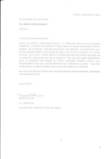

Cómo se dio la reunión
“En vista de que no tuve respuesta de las autoridades municipales, le escribí al Presidente de la República”, aseguró. Ella misma fue a dejar el oficio el 28 de mayo en el palacio presidencial. En la comunicación afirma que “se acuerda que hay necesidades pero que las autoridades locales brillan con la ausencia”, refiriéndose a Íntag. Además, enfatizó en su oficio “lo descontentos que estamos en la Zona”.
El presidente le designó a la ministra de la Secretaría de Pueblos, Movimientos Sociales y Participación Ciudadana, Alexandra Ocles, para que busque una solución. La ministra tuvo una reunión con doña Ismeria y designó al señor Edwin Robles, representante provincial, a organizar un encuentro en Íntag.
Profesores de la zona
El 16 de agosto asistieron al encuentro en Apuela representantes de la Secretaría de Pueblos, Movimientos Sociales y Participación Ciudadana; del Ministerio de Educación, de la Gobernación de Imbabura y de la Municipalidad de Cotacachi. Además, estuvieron los presidentes de las juntas parroquiales de Apuela, Cuellaje, Plaza Gutiérrez y Peñaherrera, presidentes de algunas comunidades y otros moradores y moradoras de la Zona.
Los delegados de las instancias gubernamentales hablaron sobre las mejoras que están en marcha. Por su parte, el señor Robles recordó cómo llegaron a concretar la reunión. Además puntualizó que no “han venido a solucionar problemas sino interactuar”. Lo que quería era conocer las demandas para poder “poner la casa en orden”.
El Subdirector de Educación, Miguel Castillo, al referirse a uno de los dos puntos en que se basaba el oficio de la señora Salazar, dijo que el Gobierno ha invertido 3.732 millones de dólares en la educación. Aseguró que hay más gasto porque se genera más demanda y, a la vez, hay más oportunidades. En cuanto a la solicitud de tener transporte escolar, dijo que el presupuesto tiene que salir de las juntas parroquiales. Refiriéndose al ausentismo de los profesores, aseguró que es un problema de fondo. Los profesores que vienen de las ciudades se cansan, quieren ir a sus hogares, dijo el representante del Ministerio de Educación. Para no tener estos casos, van a promover la contratación de personas que sean del sector. Los docentes tendrán 15 puntos más en la calificación si vienen de la misma zona. Con esa medida, aseguró que el ausentismo disminuirá y la calidad mejorará ya que los profesores van a trabajar por su zona. Así rinden más, afirmó.
Resultados de la reunión
En una entrevista con este medio el 22 de agosto, doña Ismeria Salazar nos dio sus impresiones de la reunión. “Me siento orgullosa por haber hecho lo que he tenido en mente”, dijo. A su vez, recordó que los compromisos fruto de la reunión fueron: conocer las necesidades que tienen los colegios en la zona, aumentar la cantidad de inodoros en el Colegio Nacional Apuela, convocar a una nueva reunión y lograr que todas las juntas estén presentes para que se comprometan. Por eso les pide a las juntas que no sigan en conflictos para que trabajen por el bienestar del pueblo.
Por otro lado, en cuanto al tema de las vías en mal estado, doña Ismeria habló con representantes parroquiales. Incluso amenazó con irse a un paro si no arreglaban la carretera. Afirma que con el apoyo de varios moradores, estaban a punto de tomar la medida. El economista Gustavo León, presidente de la Junta Parroquial de Peñaherrera, escuchó su pedido. Ella asegura que fueron gracias a sus gestiones [¿de quién, Ismeria o Gustavo?] que está la maquinaria en la vía Apuela Aguagurún.
En vista esta gestión cuyo resultado ha sido fuera de lo común, hay personas que insisten en que el propósito de doña Ismeria es lanzarse a la política partidista. La señora niega que esto sea su motivación: “No quiero entrar a la política, soy líder por las necesidades de la zona”.